3 设计基本要求
3．1 一般规定
3．1．2 本条对机电工程重要机房的设置要求作出了规定。所谓机电工程重要机房，如消防水泵房、生活水泵房、锅炉房、制冷机房、热交换站、配变电所、柴油发电机房、通信机房、消防控制室、安防监控窒等。
3．1．6 本条对不需抗震设防的设备作出了规定，对于需进行抗震设防的大于1．8kN的设备应主要包含以下内容：
1 悬吊管道中重力大于1．8kN的设备；
2 DN65以上的生活给水、消防管道系统；
3 矩形截面面积大于等于0．38m2和圆形直径大于等于0．7m的风管系统；
4 对于内径大于等于60mm的电气配管及重力大于等于150N／m的电缆梯架、电缆槽盒、母线槽。
3．1．7 抗震支吊架与钢筋混凝土结构和钢结构的根部构造如图7～图13所示：
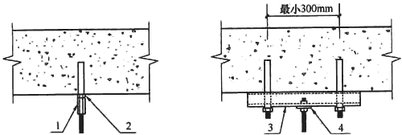
图7 吊杆根部构造示意图(钢筋混凝土结构)
1-螺杆连接件；2-锚栓；3-C形槽钢；4-方垫片
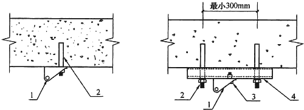
图8 抗震连接构件根部构造示意图(钢筋混凝土结构)
1-抗震连接件；2-锚栓；3-螺栓；4-C形槽钢
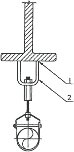
图9 作用于钢梁的吊杆根部构造示意图(钢结构)
1-满焊连接；2-U形连接构件
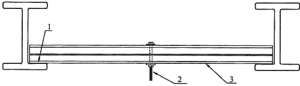
图10 作用C形槽钢的吊杆根部构造示意图(钢结构)
1-焊接连接；2-螺杆；3-加强型C形槽钢
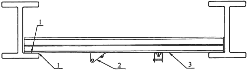
图11 作用C形槽钢抗震连接构件根部构造示意图(钢结构)
1-焊接连接；2-抗震连接构件；3-加强型C形槽钢
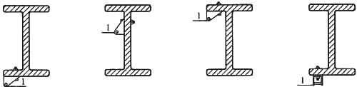
图12 作用于钢梁的抗震连接构件根部锚固连接构造示意图(钢结构)
1-抗震连接构件
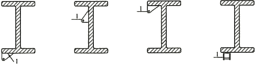
图13 作用于钢梁的抗震连接构件根部焊接连接构造示意图(钢结构)
1-抗震连接构件
3．1．8 穿过隔震层的建筑机电工程管道，应采用柔性连接或其他方式(如燃气管道穿越隔震层时应在室外设置阀门和切断阀并应设置地震感应器)，以适应隔震层在地震作用下的水平位移，并应在隔震层两侧设置抗震支架。
3．1．9 建筑机电工程设施底部采用膨胀螺栓或螺栓固定结构楼板上时，地脚螺栓的规格尺寸应根据其所承受的拉力和剪力计算确定，计算简图如图14。
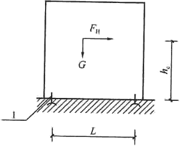
图14 设备顶部无连接结构件支撑加固的地脚螺栓计算简图
1-地脚螺栓
1 地脚螺栓的拉力，应按下式计算：
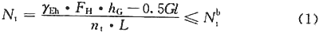
式中：Nt——地脚螺栓的拉力(N)；
γEh——地震作用分项系数，取1．3；
FH——水平地震作用标准值(N)；
hG——设备重心高度(mm)；
G——非结构构件的重力(N)；
nt——设备倾倒时，承受拉力一侧的锚固螺栓总数；
L——螺栓间距(mm)；
Nbt——每个螺栓的受拉承载力设计值(N／mm2)。
2 地脚螺栓的剪力，应按下式计算：
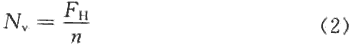
式中：Nv——地脚螺栓的剪力(N)；
n——地脚螺栓的数量。
根据上式计算出的Nv和Nt值，还应满足下列公式的要求：
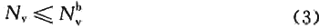
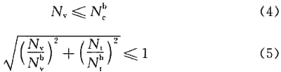
式中：Nbv——每个螺栓的受剪承载力设计值(N／mm2)；
Nbc——每个螺栓的承压承载力设计值(N／mm2)。
对于无法用螺栓与地面连接的建筑机电工程设施，应用L形抗震防滑角铁进行限位。防滑铁件板厚和螺栓直径的计算简图如图15所示。
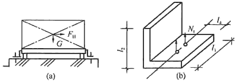
图15 L形抗震防滑铁件计算简图
1)防滑铁件的板厚，应按下式计算：
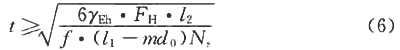
式中：t——防滑铁件的板厚(mm)；
l1——防滑铁件的长度(mm)；
l2——防滑铁件受力点到底面的高度(mm)，在设备底部以下的部位有线形(指轮廓线)的突出部分时，l2可从突出部分的底部算起；
d0——螺栓孔直径(mm)；
Ns——设备一侧的防滑铁件的数量；
f——钢材的抗弯强度设计值(N／mm2)；
m——每个防滑铁件上的锚固螺栓数量。
2)螺栓的剪力应按下式计算：
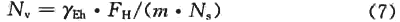
3)螺栓的拉力应按下式计算：
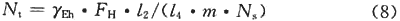
式中：l4——防滑铁件螺栓孔中心至外边的距离。
根据上式计算出的Nv和Nt值，还应满足公式(3)～(5)的要求。